BRAND ARCHITECTURE
Two brands, one system.
ZK Nation
Governance, community, voting, the DAO. ES Allianz display + Avenue Mono labels + Inter body. Signal-flag visual language. Salmon accent, used sparingly.
ZKsync Protocol
The technology & enterprise product. Inter throughout, triangle CTA accents, cleaner corporate feel. Same palette and logomark. "The Bank Stack of Ethereum."
MISSION · THE ZK CREDO
Freedom → Progress → Prosperity
ZK Nation exists to embed the values of the ZK Credo into every layer of the ZKsync protocol.
INTEGRITY
Don't trust, verify.
Computational integrity at any scale via recursive ZK proofs.
PRIVACY
A fundamental right.
Privacy we must assert and defend together — by default.
MAGIC
Magic Moon Math.
Advanced technology, indistinguishable from magic — honoring user control.
COLOR SYSTEM
Light & airy. Brand-700 is the accent, not the background.
Default to light surfaces; reach for Brand-700 to emphasize. Never full-bleed blue.
Neutral
Accent & additional
TYPOGRAPHY
Three voices: ES Allianz, Inter, Avenue Mono.
DISPLAY
BODY
MONO
THE TYPE-SIZE FRAMEWORK
LOGO & MARKS
Twin arrows. Never redrawn.
ZKsync — wordmark (master brand)
ZKsync — medallion (twin-arrow mark)
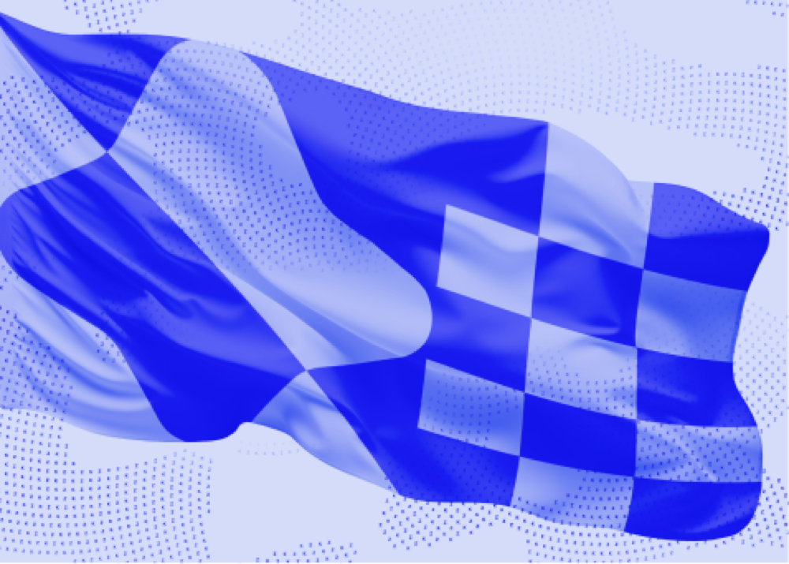
ZK Nation — logomark & flag-style
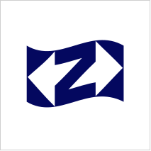
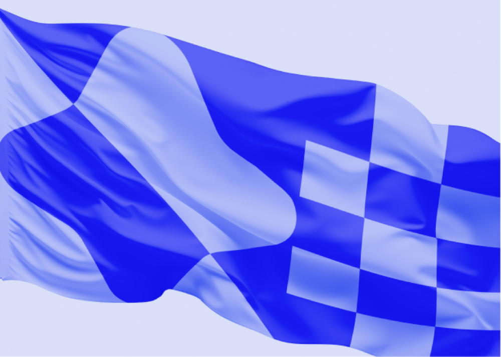
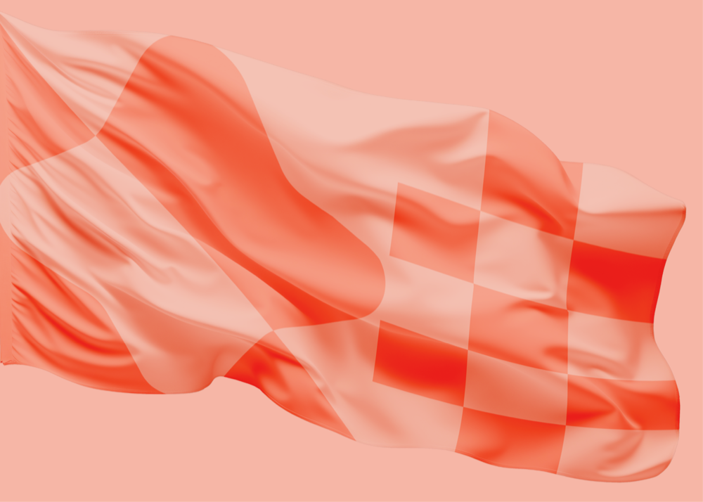
Keep ≥1× clear space (≥2× at small sizes). Don't stretch, rotate, recolor, badge, or rebuild the mark from dots/patterns. Use the original artwork from the kit. The ZKsync wordmark is the master brand; the ZK Nation square logomark is the governance sub-brand (blue default, orange expressive).
VISUAL LANGUAGE
A signal-flag alphabet for an onchain nation.
Flat, duotone, geometric tiles in brand blue (and an expressive orange set).
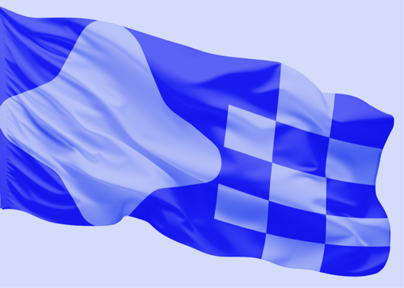
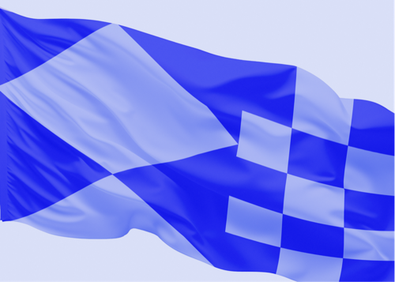
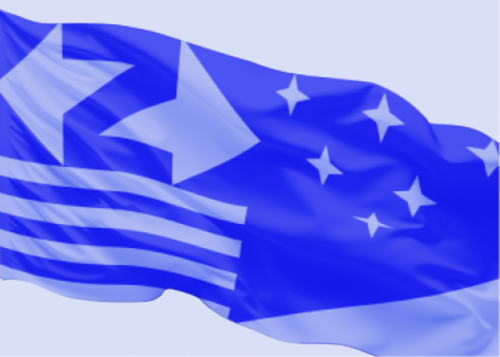
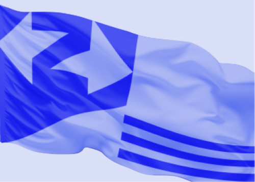
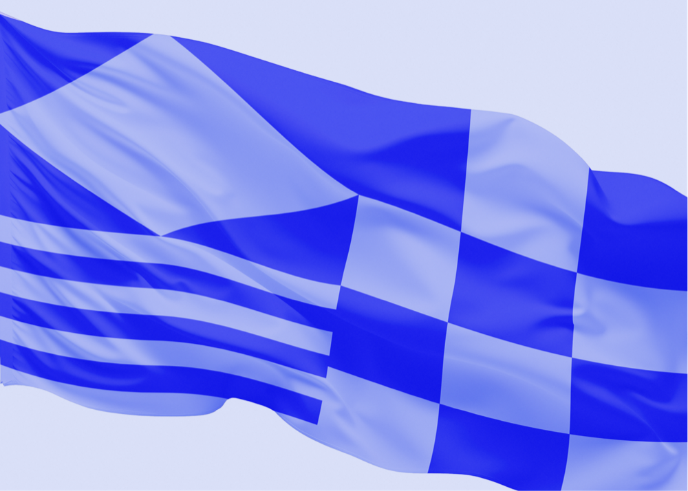
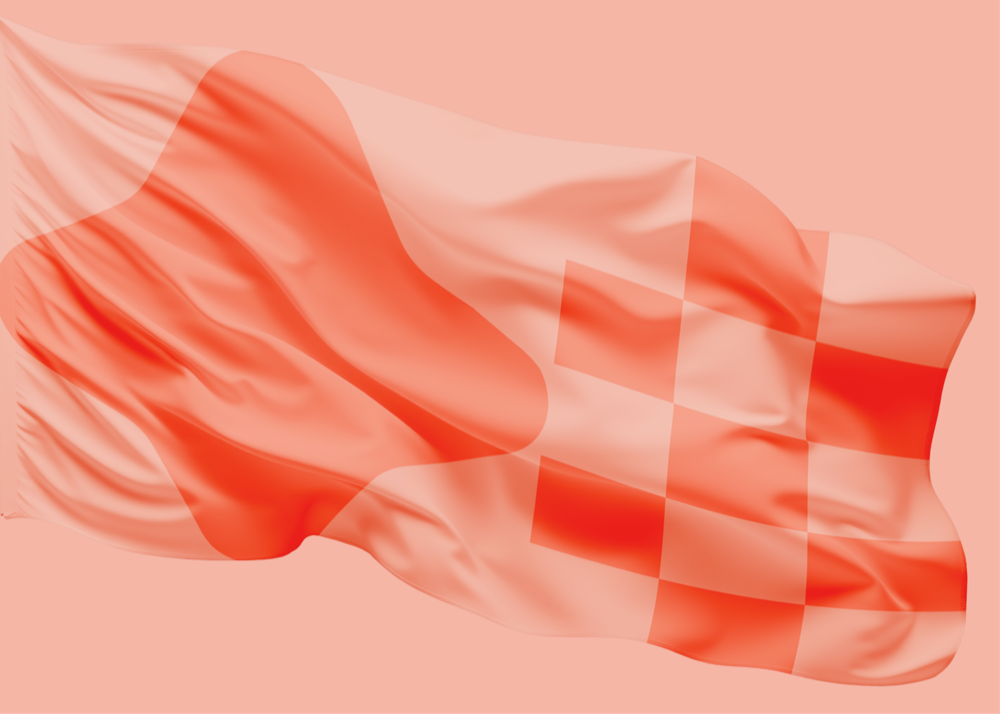
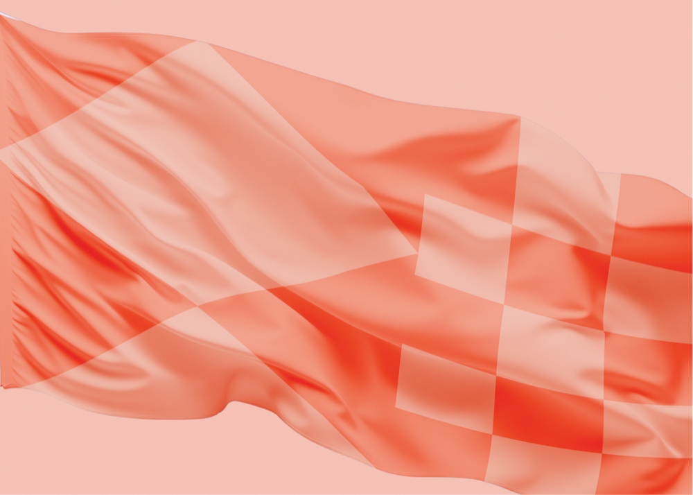
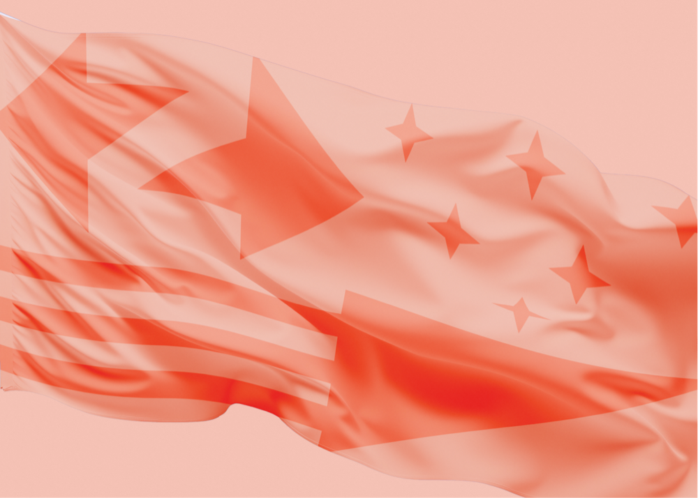
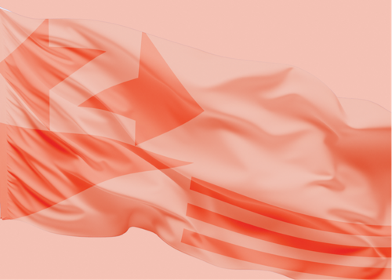
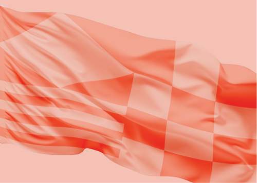
Icons — duotone, split-tone
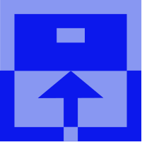
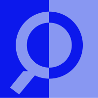
VOICE & TONE
Principled, verifiable, collective, precise, calm.
SAY
- "Shape the Future of ZKsync, Together."
- "Don't trust, verify."
- "Independently checked, not blindly trusted."
- Govern · delegate · proposal · sovereignty · onchain
- Spell it ZKsync and ZK Nation — exactly.
DON'T SAY
- Hype / FOMO ("to the moon", "LFG", "wagmi")
- Price or "investment" framing
- "Decentralized" with no mechanism
- "zkSync", "ZK Sync", "ZKSync"
- Emoji spam & exclamation theatre
VOICE IN THE WILD · REAL COPY
How the brand actually reads.
Real text from zknation.io and the governance docs — set in the brand type.
ZK Nation unites chains, builders, and operators to govern and grow the ZKsync Protocol—advancing onchain privacy, sovereignty, and interoperability.
TAGLINES (AVENUE MONO)
"History shows us how technology can expand personal freedoms, unleashing creativity and innovation, leading to progress and prosperity."
THE ZK PRINCIPLES
Trustlessness · Security · Reliability · Censorship-Resistance · Privacy · Hyperscalability · Accessibility · Sovereignty.
A decentralized network must be able to verify its own integrity — "independently checked, not blindly trusted."
COMPONENTS
Outlined boxes. Mono labels. ▸ buttons.
PROPOSAL OVERVIEW
Institutional-grade governance.
Three bodies balance power: Token Assembly, Guardians, Security Council.
This whole page is built on brand.css — these are real components.
GET THE KIT · APPLY THE BRAND
One link. Everything public.
1 · In Claude Code
Point Claude at this kit and ask it to apply the brand:
# tell Claude Code: Apply the ZK Nation brand from https://github.com/zksync-association/brandkit # or fetch the machine-readable instructions: curl -s https://npc.here.now/zknationbrand/apply-zk-nation-brand.md
2 · Install the skill
# drop the skill into your Claude Code skills dir
git clone https://github.com/zksync-association/brandkit
cp -R brandkit/skill ~/.claude/skills/zk-nation-brand
3 · Link the stylesheet (web)
Any site can use the live tokens + fonts:
<link rel="stylesheet" href="https://npc.here.now/zknationbrand/brand/tokens/brand.css">
4 · Downloads
- Claude Code skill (.zip)
- brand.css · tokens.css · tokens.json
- Tailwind preset · Office theme colors
- Fonts · Logos · Flags · Icons
- apply-zk-nation-brand.md (for agents)